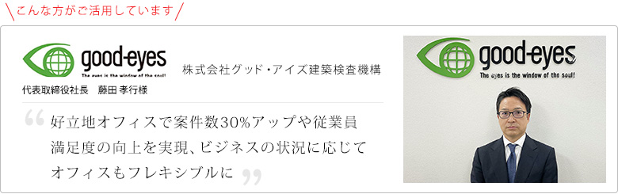
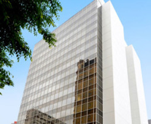

企業紹介
確認検査機関や構造計算適合性判定機関としての業務を各地で展開する株式会社グッド・アイズ建築検査機構の藤田社長。起業から現在までに至るご活用状況についてお伺いしました。

ご利用いただいているセンタ="/openoffice/オープンオフィス仙台駅前
東北の中心拠点、仙台駅前の好立地オフィス。
東京、東北各都市へのアクセスも抜群で東北統轄拠点に最適。
オープンオフィスで起業
起業にオープンオフィスを選んだ理由はどうしてでしょうか？
2005年、オープンオフィス新宿ウエストにて起業の準備を行い、11月に業務の認可が取れて6人体制で業務を開始しました。
それがスタートとなります。
そもそもオープンオフィスをはじめに選択したのは、先輩の話を聞いていたからでした。先に独立・起業をした先輩に聞くと、とにかく物件が借りられないと。それが最も苦労する点だと聞かされました。新宿などで大通り沿いに物件を借りようとしても、起業準備中の個人に貸してくれる会社はめったにありません。しかしレンタルオフィスなら部屋を借りることができ、新宿近辺の相場である12ヶ月もの敷金も必要ない。起業の準備を行うのに最適な環境だったわけです。 しかし半年ほどで新大久保の現在の本社に移転したため、レンタルオフィスの使用は一旦ここで終了します。この時期の、オープンオフィスで広い部屋に移ったり、部屋を追加でしたり、それを当時私は「ヤドカリ」なんて言っていましたが、殻を移りながら成長していくというイメージをその後も持っていました。
業務の進展に伴うオフィスサイズの最適化
起業から7年目、仙台での事業のスタートに伴いどのような理由でオープンオフィスを選択したのでしょうか？
事業の成長とともに首都圏としては横浜のリージャスセンターなどにもオフィスを開設してきました。
2012年4月に仙台で事業を展開することに伴い、リージャス仙台マークワンに入居しました。2015年4月にオープンオフィス 仙台青葉通りに移転し、認可の更新前に仙台から一時撤退しました。宮城県より認可の更新をするために県内に事務所が必要だったことから、2020年5月には仙台のリージャスブランドの中では駅前に立地していて比較的リーズナブル、かつ、新しいオープンオフィス 仙台駅前に入居し、現在に至ります。
仙台での事業自体は上手く行ったのですが、業務拡大の見通しが想定よりも遅かったため、当時仙台にできたオープンオフィスに移転しました。
受付サービスのしっかりしたリージャス仙台マークワンに満足はしておりましたが、シンプルなオープンオフィスのサービスで十分な場合もありますので、業務の展開に合わせて、コストのスリム化を図ったわけです。
テレワーク普及下におけるオフィスの役割について
テレワークが普及しましたが、御社としてもオフィスやワークスペースに対して何かお考えに変化などございましたか？
もともと国からの認可を得て事業を行っているという性質上、テレワークや自宅勤務をすることができない、という前提があります。スタッフの中には高齢者の有資格者もおりますので、コロナ禍においてはテレワークができる方法を模索しましたが、最終的にはやはりオフィスに出社しないことには業務ができない、という結論に至りました。国からの認可を得て事業を行うということは、定められた場所と業務時間内で決まった業務を行うということが法律的な制度として義務付けられており、コロナ禍でも例外ではなかったということです。
一方でテレワークについて考えたことで、改めて社員が働きやすい環境やモチベーションの維持、それを通じた生産性の向上といったことを考えたときに、オフィスのあり方は重要だなと思いました。
また視点を変えた時に、テレワークありきで事業ができる方法が何かしらあるのではないか、という考えも今後の発想としては持っていこうとに感じています。例えば、当社の事業の性質上、有資格者の人材獲得が大きな課題になっています。これまでは東京をベースに地方へ展開していくような考えを持っていましたが、地方で人材を現地採用していくという考え方もできるように思います。
- 企業データ株式会社グッド・アイズ建築検査機構
- 所在地：
〒169-0073 東京都新宿区百人町2-16-15 M・Yビル2 〜 3階 - 電話：03-3362-0475（代表）
- FAX：03-3362-0495
- 設立：2005年9月2日
- 代表：代表取締役 藤田 孝行氏
- 業種：確認検査機関業務（1都21県）、
構造計算適合性判定機関（1都28県） - リージャスご利用歴：7年（以前にも利用歴あり）
- 利用サービス：="/openoffice/href="/openoffice/sendaiekimae/" target="">オープンオフィス 仙台駅前
- 所在地：
- 指定確認検査機関
(国土交通省 国土交通大臣指定 第21号)
指定構造計算適合性判定機関
(国土交通省 国土交通大臣指定 第10号)
登録住宅性能評価機関
(国土交通省 国土交通大臣登録 第32号)
CASBEE評価認証機関
(IBEC機関認定第5号)
登録建築物調査機関
(国土交通省 国土交通大臣指定 第11号)
http://www.good-eyes.co.jp/